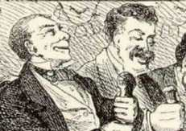

|
MT's own fullest account of how and why he became a stand-up humorist, listed below, isn't very dependable. Yet we don't have any clearer account of it. In retrospect it seems inevitable that "Mark Twain" would become not just a writer's pseudonym, but one of America's most popular performative events, but according to MT himself, deciding to give his first lecture, renting the hall, buying the advertising, and so on, took a lot of courage. Before he took the stage at the Academy of Music in San Francisco, he had already achieved local fame as a newspaperman and humorist, and it's clear from the pre-performance publicity for his debut that many people were already looking forward to an amusing evening. The lecture fully satisfied their expectations. Perhaps even before his first lecture MT also scheduled his first lecture tour, into the mining towns outside San Francisco and back to the Nevada Territory where "Mark Twain" had been born. He didn't make as much money as he had hoped to from this first experiment as a stand up entertainer, but as you can see from the reviews accessible below, he did strike a vein he continued to mine for the rest of his life. |